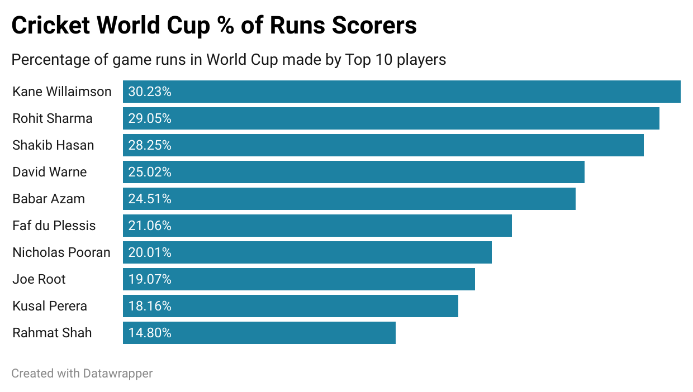

Source of Visualization
Source of Visualization
Bad Visualization Reasons
- Uses a Donut Chart, Humans have a hard time measuring area
- Title of visualization doesnt explain/ make ambiguous what sport this is for or what is the purpose
- FUll names of players not listed, people unknown to Cricket may not know who these people are
- Color scale/ color usage is terrible, no need for multiple colors

Good Visualization Reasons
- Purpose of Visualization is clearer to user
- Color Scale is uniform
- Players name are fully listed
- Y-axis list highest to lowest percentage scores